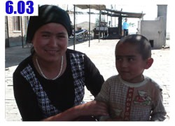
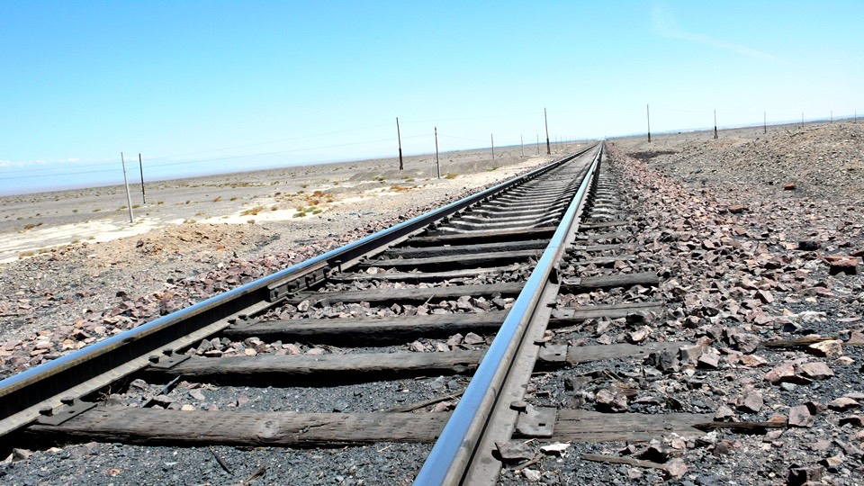

經過昨天開心的吃喝到深夜，早上又差點爬不起來。
看著晨間新聞，有提到一些關於地球暖化的消息，像是有數千個景點要因為地球暖化的緣故而消失。
有很多還是世界遺產的珍貴景點，像是大堡礁等，很快的就再也看不見了。
還有北極的愛斯基摩人，以捕抓海豹維生的當地人，已經有越來越多人因為冰層變薄而摔落溺水而死。
聽起來有點好笑，但這真是很不好的新聞，目前地球暖化的速度已經比專家當初預測的要快上三倍。
並且沒有任何減緩的跡象，也許不用到我們的下一代，過不了多久全球氣候異變了，那就等著自食惡果吧。
這間旅館住了很多奇特的旅行者，像是六十二歲騎著單車到新疆來看哥哥的老伯，騎到甘肅看到戈壁灘就不敢再走了。
也有徒步旅行的勇士，不知道走了多遠，腳都走腫了，在哈密這裡打針休養。
老闆說前幾年有一個日本人也騎自行車旅行，他叫做『喜多神行』，一個人計畫從上海騎到葡萄牙。
也在哈密的這間旅館住了三天，所睡的就是我那一間房，雖然沒有遇到，但真是一種很巧合的緣分。
在哈密市郊的北方，發現了睽違已久的早餐店，今天終於不用再吃單車早餐了。
開心的點了兩根油條、一碗八寶粥，吃了一個多月的中國早餐，點八寶粥記得要加糖再吃，不然完全是沒有甜味的
又點了小籠包，結果一開始送來三個給我，怕我吃不完嗎？跟老闆說給我一整籠的大肉小籠包。
邊吃邊和同桌的客人聊天，今天的目標是三道嶺，一個產煤的小城市，探聽一下今天要騎的路好不好走？
基本上有兩種選擇，一是走312國道，二則是走502省道。
省道就是小路，但是會經過比較多的維族小村莊，可是路就沒有國道那麼好，路線也並非直線。
但是相對的車流量少很多，卡車也就不會再叭我了，兩條路的選擇似乎很明顯。
從國道離開，轉進省道，省道旁沿路很多農家，搭著像是葡萄的棚架，遠方就是依舊白雪靄靄的天山山脈。
幫忙打廣告，想學吉他的人，請跟阿里巴巴聯絡，雖不知道他的琴藝怎麼樣，但是光是名字很酷這一點就大力推薦了。XD
進入新疆之後，很快的就進入了維吾爾的自治區，簡稱維族。
在小村莊的樹蔭下，就看到維族的女人和小孩聚在一起賣水果，靠過去一看原來是杏子。
成熟的杏子就沒那麼酸，味道比較甜很好入口，我買了十塊錢，足足給了我兩公斤的杏子，我還得分裝成三個小包才有辦法放進背包裡。
這個小孩的打扮很奇特，褲管是喇叭褲搭配很花俏的蕾絲花邊，很像小貓王。
沿路就開始吃杏子，回想起我在法國的時候也是買了一堆邊騎邊吃，吃光了才想到會不會有農藥殘留，
中國的應該沒有農藥的問題，放心的一顆接一顆的吃。
今天是屬於完全沒有風的天氣，空氣是靜止的，所以太陽很快的就在身上留下高溫，且揮散不去。
人真是很麻煩的動物，整天吹著逆風的時候，就希望老天爺可以停一下，不要再吹了。
真的變成無風的天氣的時候，就希望可以刮點風，就算是逆風也沒關係，幫忙散熱一下吧。
省道是綠意和沙漠交錯著出現，有些沙已經快將路牌都給埋掉了。
半路上看到一棵大樹半倒在路上，佔據了三分之一的路面，終於有地方可以乘涼了，很開心的在樹上又爬又跳的。
等我玩夠了之後才發現樹上爬滿了身長一公分以上的紅色大螞蟻，有幾隻已經爬到身上來了，靠著樹的小多也是被螞蟻給攻佔，
小心翼翼的拍掉螞蟻，我可不想被蜜蜂螫到的腫包還沒有消退，接著又要被大螞蟻給咬傷。
這一路往西走，有三條路是並行的，除了312國道502省道之外，還有一條鐵路。

開往產煤的三道嶺，可想而知火車掛的都是運煤的車廂，但是居然連火車都是古老的那種煤炭蒸汽火車，
真是超越時空的畫面，貨真價實的蒸汽火車從我面前開過去。
當地人說，很多外國人每年都特地到這邊來拍火車的照片，真是一種特殊的光景。
天氣雖然熱，但是整個人都包的密不通風的，也還算撐的過去。
太陽越大穿的要越多，穿的越多反而越涼快，穿著短褲短袖可能早就中暑了。
下午兩點半多就到達三道嶺了，在戈壁灘一天都可以騎上兩百公里，今天就算再怎麼熱，只騎八十幾公里都是小意思。
還沒進入城市就已經先看到煤礦場，除了要挖隧道進入地底開採的，也有露天開採的煤礦。
剛進入三道嶺，只覺得怎麼這麼不熱鬧，沒有餐廳也沒有店家，倒是很多像是公寓一般的房子。
拐了一個彎終於被我發現餐廳，被店裡的客人招呼過去一起吃飯，大家都是礦場工人中午休息來吃飯。
原來這邊還不是市區，而是南邊的礦區，市區還得再走三公里，那邊才有地方可以住店。
也罷，小地方有小地方的溫馨，請老闆幫我炒一份和當地人吃的一樣的拉條子，我則去商店買一瓶冰啤酒回來解渴。
我問老闆這邊有沒有商店，他說在轉角處那有唯一的一間，大家以為我要去買什麼東西這麼急。
看到我拎著啤酒回來，大家都笑得很開心。
因為這邊的漢人還算多，越往烏魯木齊走，漢人就越少，維族人就越多，所以這邊的人漢語都說的很好。
我跟他們學幾句實用的維語。
跟維族人見面的時候要先打招呼『阿薩拉姆雷空』，這不是你好的意思，而是打招呼表示友善。實用度100%。
再學一句謝謝『拉合美特』，只要會這兩句話，走遍新疆都OK啦！
餐廳老闆娘的兒子，叫做『奶別兒』，今年五歲，維族的小孩看起來都很有外國人的感覺。
他很可愛，對小多還有滿車的裝備很感興趣，戴我的太陽眼鏡、玩打氣筒，拿出昨天買的巧克力派分他吃兩個。
大人們則翻閱我帶的中國地圖，跟我分析接下來的路況，接下來還是有戈壁灘，一百多公里沒人煙的情況還是有，
他們叫我多帶一點糧食跟飲水，因為要往吐魯番的路上會經過火焰山，那邊很熱很熱，要我一個人要多小心。
吃著超好吃的炒拉條子，好吃的維語不會講，就跟老闆比一個大拇指，然後說『拉合美特！』
慢慢的吃著麵，跟小孩玩，喝著熱茶跟大人聊天。
維族的廚師大叔很猛，一隻手輕輕鬆鬆的就把重達五十公斤的小多舉起放下的，絲毫不費勁。
看得我目瞪口呆，我說這車很重呀，你怎麼舉起來這麼輕的感覺。
結果還被吐槽說這是我自己的車，我怎麼可以只會騎，但是自己都抬不動~_~
『我抬的動啦，但是要費盡吃奶的力氣就是了。』笑笑的反駁道。
這是『奶別兒』的媽媽，她問我今年都二十六歲了，結婚了沒有？
我說還沒，還早的很呢～結了婚之後怎麼可能有辦法像這樣出來騎一個多月的自行車。
這位媽媽今年才二十四歲，奶別兒已經五歲了，所以我二十六歲還未婚，在他們的標準來看，已經一點都不早囉。
很開心的消磨到下午三點半，分享我的零食跟奶別兒一起吃，每從我手中拿過一個，他都會很有禮貌的說謝謝。
看看時間差不多了，跟大家握手告別，揮揮手跟奶別兒說再見，準備進入市區找住店的地方。
三道嶺因為產煤，又稱為煤城，什麼都東西都跟『煤』有關係，煤城公園、煤礦俱樂部，還有我今天住的煤城招待所。
沒讓我失望，十元就可以住一個晚上，可能是產煤的關係，熱水是無限制供應的。
很開心的用臉盆裝冷水在混著熱水洗澡，也把衣服用滾燙的熱水加洗衣粉好好的消毒一下。
晚餐吃肥羊清湯鍋，附一盤小山一樣高的小肥羊，其他的火鍋料就跟台灣一樣自助式，有本事吃多少就盡量吃吧
所有的料都是用小竹籤串起來的，所以又名串串香，似乎在新疆才有這樣的火鍋吃法。
在這邊很開心的補充了非常多的青菜，吃的好飽好飽，看著滿桌的竹籤，數一數竟然有九十幾串~_~
這麼熱的天吃火鍋，這跟穿衣服的邏輯一樣，要逆向操作呀，不要被太陽和高溫給打敗了。
繼續閱讀：6.4 湖泊化石
中國-人民幣－ 1：4.3 台幣
6.3
總計：47.5元
早餐大肉小籠包3.5元、油條1元、八寶粥0.5元、杏子兩公斤10元、午餐拉條子5元、冰啤酒2.5元、住店10元、晚餐肥羊清湯鍋15元